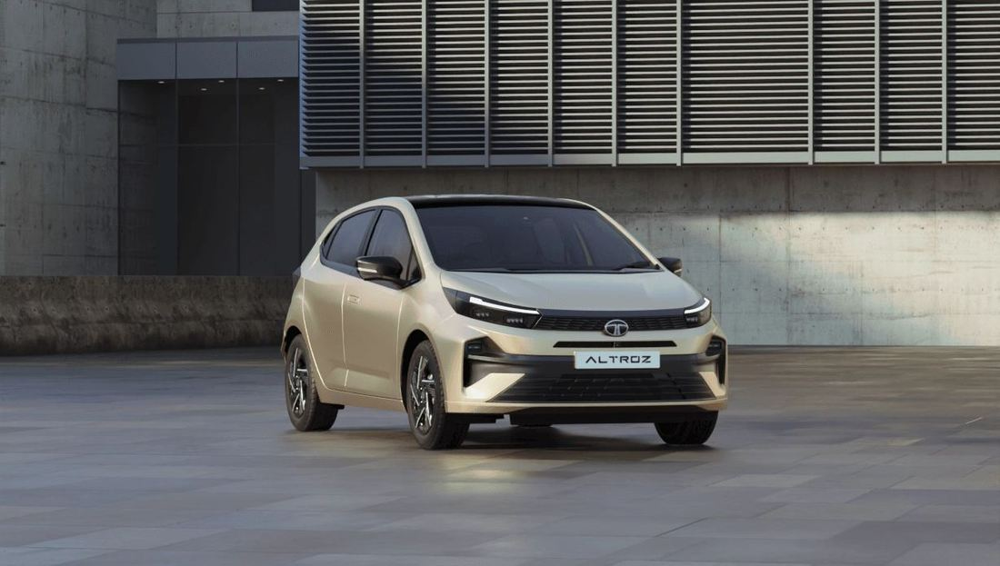
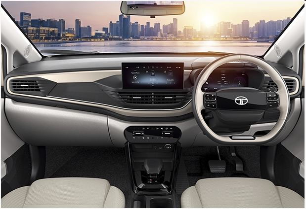
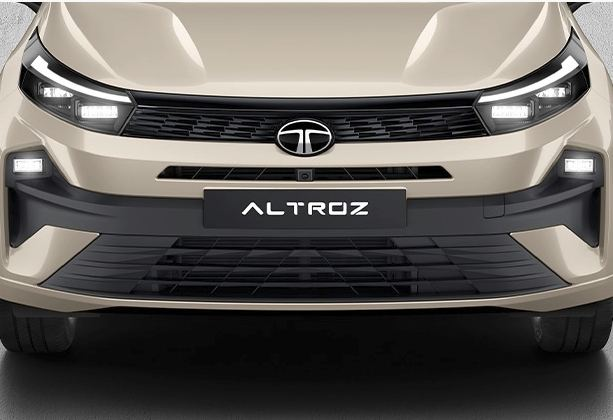
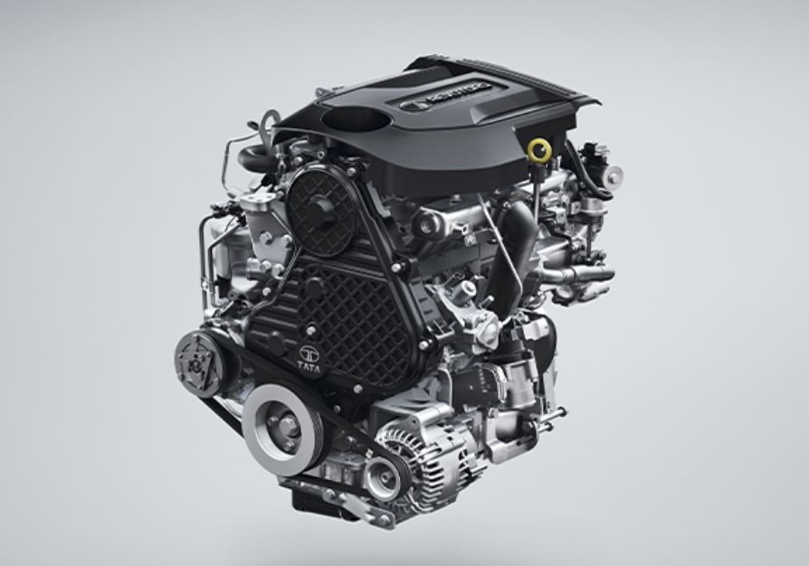
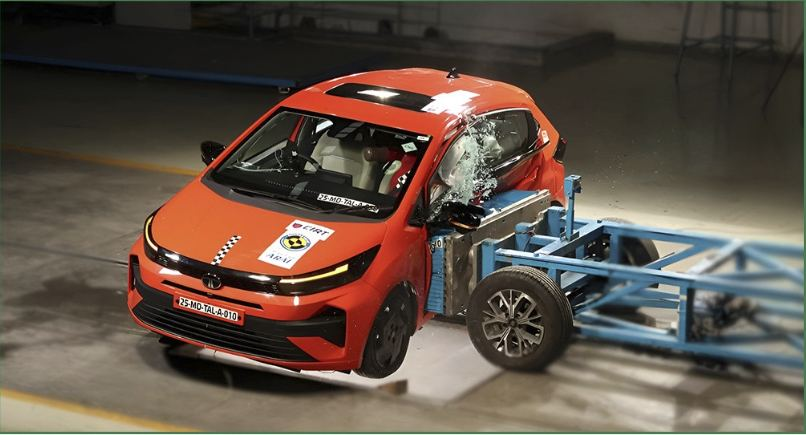
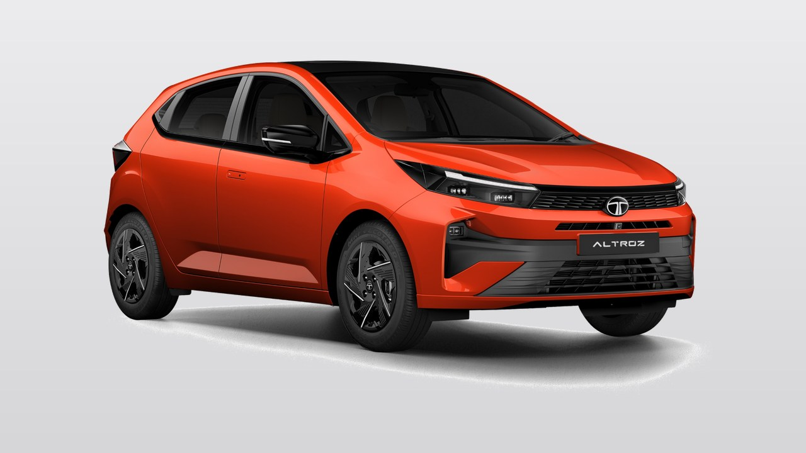

Maruti Swift 2026: Mileage, AMT or CNG? Which to Buy
By Gagan Mishra

The Altroz is the only hatchback in its class with petrol, diesel and CNG, and since May 2026 it has also offered CNG with an automatic. Its five-star Bharat NCAP rating covers all three fuels. The petrol engine is the weak point.
This review uses Tata Motors’ published information, the Bharat NCAP report, current listed prices and Autocar India’s road test, not our own test. Prices and specifications were checked on 21 November 2026. See our Review Methodology for how we separate editorial assessment from measured testing.
The Altroz doesn’t win on driving thrills; the 1.2 petrol is adequate rather than exciting. It wins on safety, ride quality and choice. It is the only hatchback here with a diesel, its CNG keeps a usable boot, and every version carries the same five-star rating. If safety and fuel flexibility matter most, it is hard to look past.
| Trim | Ex-Showroom Price (from) |
|---|---|
| Smart | ₹6.00 lakh |
| Pure | ₹7.15 lakh |
| Pure S | ₹7.45 lakh |
| Creative | ₹8.10 lakh |
| Creative S | ₹8.45 lakh |
| Accomplished S | ₹9.30 lakh |
| Accomplished+ S (DCA) | ₹10.75 lakh |
Most trims come with petrol, CNG or diesel; the diesel starts at ₹8.30 lakh and CNG at ₹7.30 lakh. Tata added a CNG automatic (AMT) in May 2026, which CarWale reported at ₹8.70 lakh. The fully loaded Accomplished+ S is sold only with the petrol dual-clutch automatic. Creative is where the Altroz starts to feel properly equipped. Every trim gets six airbags and the same five-star structure, so you do not need to buy the top version for safety.
The 2025 facelift gave the Altroz a cleaner look, with new lighting, a revised bumper, new alloy wheels with aero-style streaks and flush-fitting front door handles. Autocar India notes the handles need a firm press, and that the car has lost some of the original’s sporty stance. At the back, slim LEDs sit inside the existing tail-lamp housings, and top models add a light bar. Tata’s 90-degree opening doors remain a useful touch for anyone loading children or shopping, although they are a reach to close when fully open.

The cabin was redone with the facelift, and Autocar India found the ambience much more premium, with better thigh support from the front seats. Rear space is fine for average-sized adults, but a Hyundai i20 is roomier, and taller passengers will find headroom only just adequate.
The 345-litre boot is a class best on petrol and diesel versions. The CNG version uses two slim cylinders under the floor instead of one big tank, so it still offers a usable 210 litres. That is far more than most CNG hatchbacks manage.

Six airbags, electronic stability control, ISOFIX mounts and three-point belts for every seat are standard. Higher trims add a 10.25-inch touchscreen with wireless Android Auto and Apple CarPlay, a 360-degree camera, a voice-enabled sunroof, wireless charging, 65W USB-C chargers and an air purifier. The 10.25-inch digital instrument cluster is reserved for the top Accomplished+ S, which comes only as a petrol automatic. Autocar India rated the touchscreen responsive and the camera picture good.

There are three engines, and the right one depends on how you drive. The turbo-petrol Altroz Racer has been dropped.
| Engine | Power / Torque | Transmission Options |
|---|---|---|
| 1.2L Petrol (3-cyl) | 88 PS / 115 Nm | 5-speed Manual, 5-speed AMT, 6-speed DCA (dual-clutch) |
| 1.2L iCNG (twin cylinders) | 73.5 PS / 103 Nm (CNG mode) | 5-speed Manual, 5-speed AMT |
| 1.5L Diesel (4-cyl) | 90 PS / 200 Nm | 5-speed Manual |
Autocar India found the 1.2 petrol fine for city use but not a match for Maruti’s rival engine. Autocar India found the CNG version better than its numbers suggest in the city, with a light clutch, but short of power on expressways. The diesel has strong low-down torque for highway driving but is loud, with a clatter at idle.
Tata has not published official fuel-economy figures for the facelifted Altroz, so we have none to quote. In real-world tests of the CNG, Autocar India recorded 20.56 km/kg in the city and 29.65 km/kg on the highway, and CarWale 19.80 and 34.58 km/kg. Petrol and diesel versions have a small 37-litre tank.

This section draws on the published Bharat NCAP report and Autocar India’s road test, not our own, in line with our Review Methodology. Bharat NCAP gave the Altroz five stars in 2025, with 29.65 out of 32 for adult protection and 44.90 out of 49 for child protection. The frontal offset test scored 15.55 out of 16 and the side barrier test 14.11 out of 16. Bharat NCAP tested CNG and diesel versions, and Tata says the rating covers petrol, diesel and CNG. Tata calls it India’s only five-star car powered by CNG.
On the road, Autocar India rated the ride and handling balance the best in class. The car is slightly firm at low speed but shrugs off potholes, with confident high-speed manners and a connected feel to the steering. The main weakness is noise: road and wind noise around the mirrors at speed, and a noisy diesel.

Following our Review Methodology, we rate eight criteria on paper, using official specifications, prices and published test evidence rather than our own driving, then average them into a Spec Score.
| Criteria | Score |
|---|---|
| Design | 8.0 / 10 |
| Performance | 6.5 / 10 |
| Mileage Potential | 8.5 / 10 |
| Comfort | 7.5 / 10 |
| Features | 8.0 / 10 |
| Safety | 9.0 / 10 |
| Practicality | 8.0 / 10 |
| Value for Money | 8.0 / 10 |
| Spec Score (average) | 7.9 / 10 |
Design: A sharp-looking hatchback, freshened by the 2025 facelift.
Performance: An adequate but unexciting petrol, a slow CNG and a strong but noisy diesel.
Mileage Potential: Diesel and CNG give low running costs; no official figures published for the facelift.
Comfort: Best-in-class ride, but an upright rear seat and noise at speed.
Features: 360-degree camera, sunroof and big screens; the digital cluster is top-trim only.
Safety: Five stars from Bharat NCAP across petrol, diesel and CNG.
Practicality: A class-best 345-litre boot, and 210 litres even with CNG.
Value for Money: Keenly priced, with three fuels and four gearbox types to choose from.
The Altroz isn’t chasing anyone with turbocharged excitement. It is for the buyer who wants the safest, most flexible hatchback at this price, and on that brief it delivers. It has a five-star rating on every fuel, the only diesel in the class, a CNG with a usable boot and an automatic, and an excellent ride. The trade-offs are a lacklustre petrol engine and a noisy cabin at speed. If those matter more, the Baleno or i20 may suit you better.

What is the price of the Tata Altroz in 2026?
CarWale and CarDekho list the Altroz from ₹6.00 lakh to ₹10.90 lakh, ex-showroom, in November 2026.
What is the Altroz Bharat NCAP rating?
Five stars, with 29.65 out of 32 for adults and 44.90 out of 49 for children. Tata says the rating covers petrol, diesel and CNG versions.
Is there an Altroz CNG automatic?
Yes. Tata added a CNG AMT in May 2026.
How much boot space does the Altroz have?
345 litres for petrol and diesel versions and 210 litres for CNG, thanks to its twin slim cylinders.
What mileage does the Altroz give?
Tata has not published official figures for the facelift. Autocar India’s test of the CNG returned 20.56 km/kg in the city and 29.65 km/kg on the highway.
Does the Altroz still have a diesel?
Yes. A 1.5-litre diesel with 90 PS and 200 Nm, offered only with a 5-speed manual.
Links checked 21 November 2026. Driving impressions and fuel tests are from the publications named in the text. We have not driven this car.
By Gagan Mishra
By Gagan Mishra

By Gagan Mishra